Å ta bærekraftige valg betyr å ta valg som ikke ødelegger for fremtiden og ivaretar miljøet.
Når du kjøper nye klær, er det veldig lett å se om tekstilet til klesplagget er bærekraftig.
Det kan man sjekke ved å se på lappen på innsiden av plagget.
Hvis klesplagget er laget av tekstiler som er resirkulert som for eksempel, resirkulert bomull eller resirkulert polyester.
Så er det teknisk sett bedre for miljøet, fordi det er resirkulert.
Noen av de mest miljøvennlige og naturlige tekstilene du kan bruke er som følgende, ull, silke, hamp, lin, eller økologisk bomull.
Så hvis du skal kjøpe en ny ullgenser, vill den være mer bærekraftig enn, en ikke resirkulert genser laget av polyester.
Et annet alternativ for å være mer miljøvennlig er å kjøpe brukte klær.
Å bruke brukte klær er bedre for planeten, fordi da bruker du tekstiler som allerede eksisterer og slipper derfor å produsere nytt.
